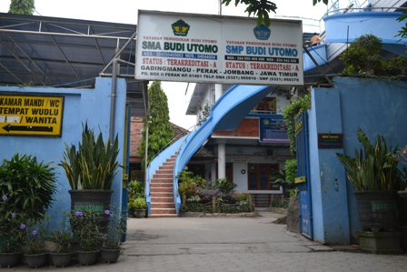

Pondok Pesantren Gadingmangu merupakan salah satu pusat pendidikan Agama Islam terbesar di Indonesia, yang menekankan pada pengajaran Al Quran & Al Hadist dan pembentukan akhlakul karimah generasi muda. Para santri juga dibekali ilmu pengetahuan umum, ketrampilan dan kewirausahaan sebagai bekal kelak apabila sudah terjun di masyarakat umum. Dengan suasana yang asri serta berdampingan dengan lingkungan Yayasan Pendidikan Budi Utomo, menjadikan Pondok Pesantren Gadingmangu sebagai tempat yang tepat untuk menimba ilmu agama Islam, sekaligus ilmu pendidikan umum di jenjang dasar dan menengah.
Nama Pondok Pesantren :
Pondok Pesantren Gadingmangu
Berdiri Tahun :
1952 M
Alamat Sekretariat :
Jl. Masjid Luhur – Gadingmangu – Perak – Jombang – Jawa Timur
LEGALITAS
Badan Hukum :
Yayasan Pondok Pesantren Gadingmangu
Lokasi :
Desa Gadingmangu, Kecamatan Perak, Kabupaten Jombang Provinsi Jawa Timur Indonesia
School
Pertama kali memasuki kawasan sekolah SMA Budi Utomo Perak maka akan disuguhkan halaman utama dari SMA Budi Utomo Perak dengan bernuansa warna biru. Sekolah SMA Budi Utomo Perak memang berdampingan dengan SMP Budi Utomo Perak sehingga pintu utama dan halaman utama menjadi satu karena masih dalam satu yayasan yaitu Yayasan Pendidikan Budi Utomo Gadingmangu Perak Jombang

Gedung Baru
Tampak Gedung 4 SMA Budi Utomo Perak yang sangat tinggi dengan memiliki tiga tingkat. Gedung ini digunakan sebagai tempat berlangsungnya proses belajar mengajar antara peserta didik dengan pendidik. SMA Budi Utomo Perak memiliki empat gedung yang masih dalam satu lingkungan atau kawasan yang tidak begitu jauh antara gedung yang satu dengan gedung yang lainnya.